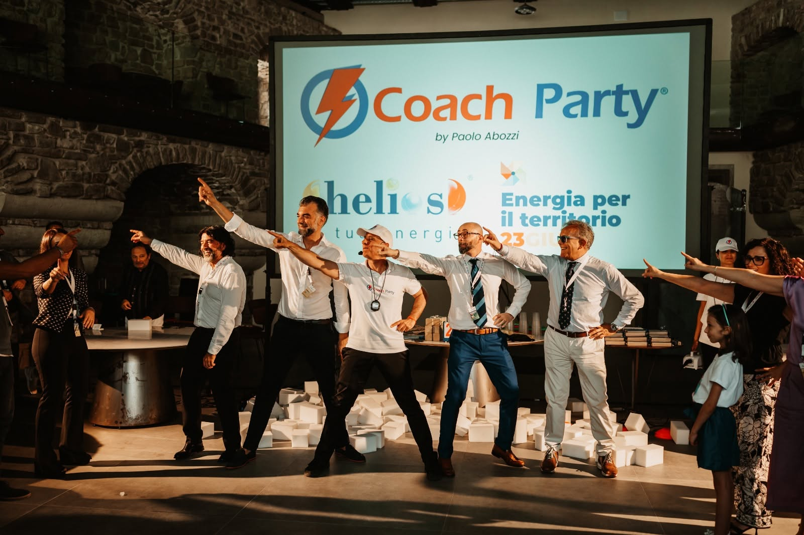
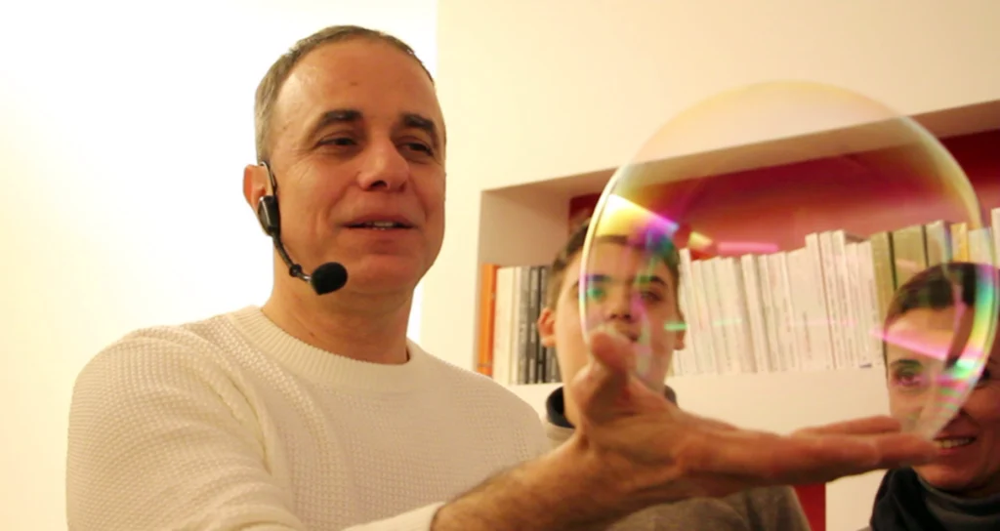
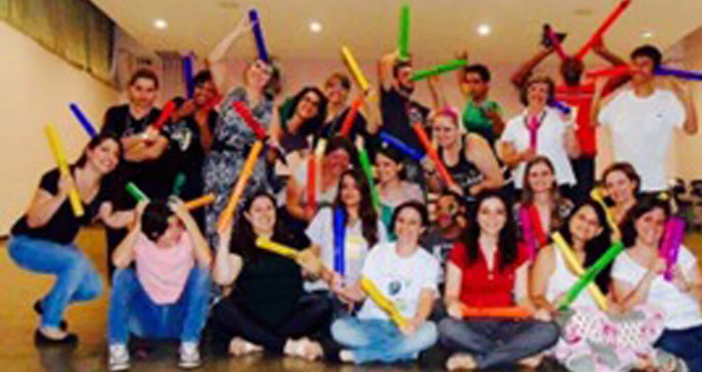
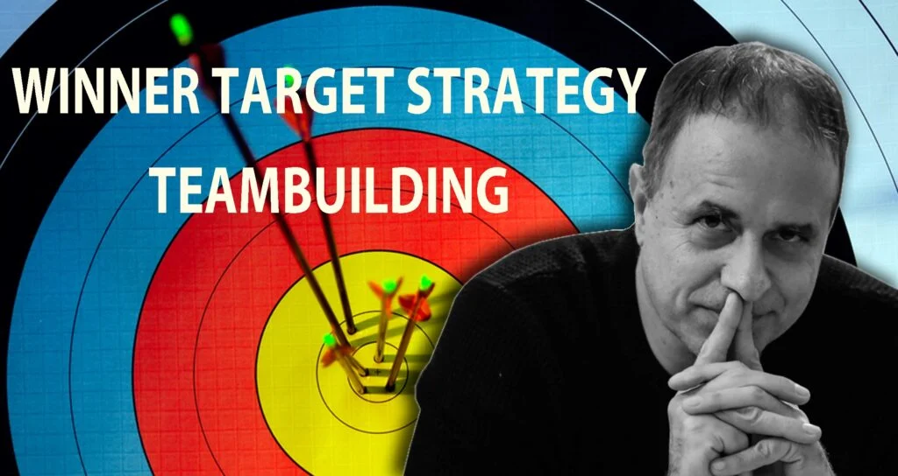
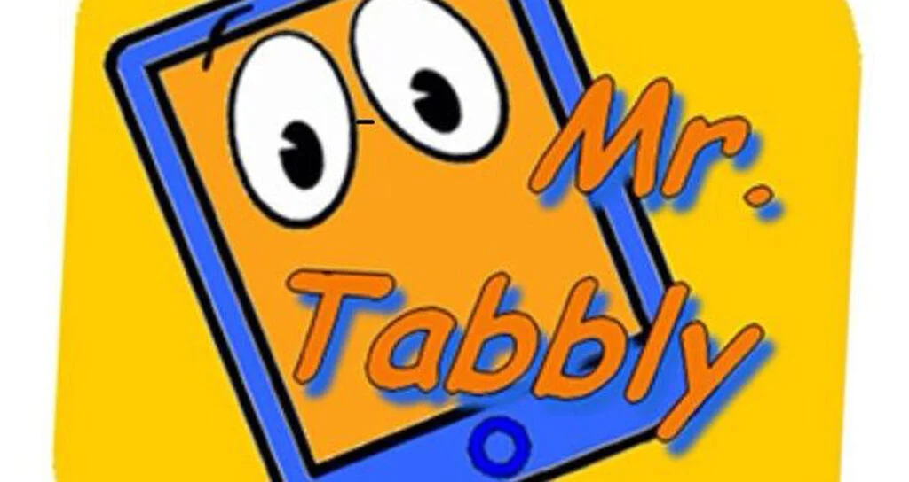
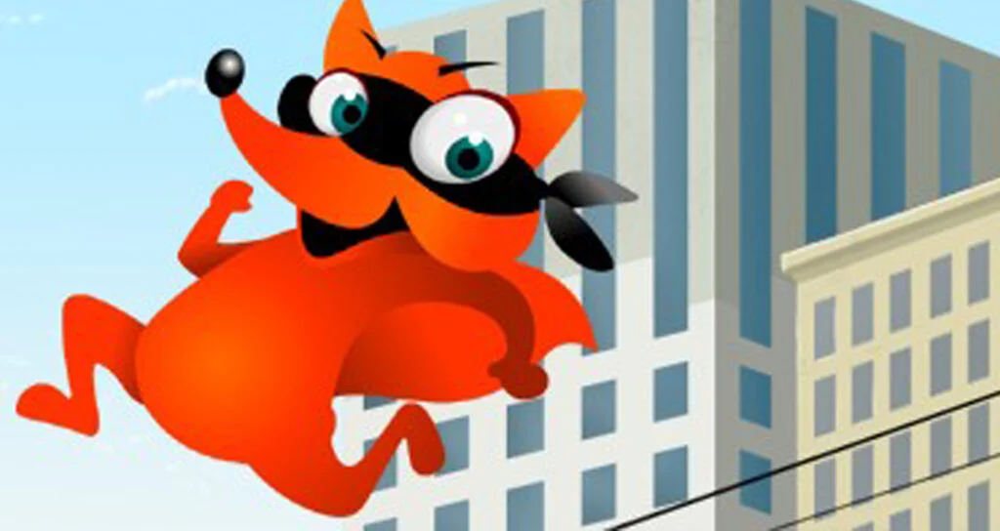

Creatività e comunicazione
Nella mente del mago
Cambiare prospettiva, trovare nuove soluzioni.
2 oreEsplora
Gioco, spettacolo e formazione si incontrano. Esperienze con Paolo Abozzi per allenare la collaborazione, accendere le idee e coinvolgere le persone.
Per aziende, gruppi e famiglie. Con un obiettivo condiviso.


Alcune realtà
che ci hanno scelto
Comunicare, collaborare, creare. Parti da ciò che vuoi allenare e scopri il format più vicino al tuo gruppo.
9 esperienze da esplorare
Cambiare prospettiva, trovare nuove soluzioni.

Ogni persona ha una nota. Insieme nasce il ritmo.
Dare forma alle idee, con acqua e sapone.

Il piacere di mettersi in gioco, insieme.

Un obiettivo chiaro. Un gesto consapevole.

Un quiz che mette in movimento tutto il gruppo.
Portare presenza, emozione e attenzione nella comunicazione.

La città diventa un campo di gioco.
Uno spazio per mettere a fuoco la tua direzione.
Una sfida, una nota musicale, un gioco di prestigio. L’esperienza offre un punto di partenza concreto per osservare come pensiamo, comunichiamo e lavoriamo insieme.
Lo ShowCoaching® unisce la presenza dello spettacolo alla riflessione guidata. Il tema dell’incontro orienta la scelta delle attività.
Partiamo dal gruppo, dal contesto e da ciò che vuoi portare al centro dell’incontro.
Gioco, musica, magia e movimento invitano le persone a partecipare in prima persona.
Il confronto aiuta a riconoscere dinamiche, risorse e spunti da riportare nella quotidianità.

Sono Paolo Abozzi. Nel mio lavoro si incontrano spettacolo, comunicazione e coaching.
Ho creato lo ShowCoaching® nel 2017, unendo l’esperienza di performer alla formazione. Porto questo approccio in workshop, team building e percorsi dedicati alla persona.
La domanda che guida ogni incontro è semplice: come trasformare la partecipazione in un’occasione per capire qualcosa di sé e degli altri?
Paolo Abozzi
Conosci il mio percorso“Esperienza emozionante capace di muovere in te le parti più profonde che finalmente riescono a vedere la luce.”Elena S. · Biologo ricercatore
Partiamo dal tuo obiettivo, dal numero di partecipanti e dal contesto. Paolo ti aiuta a individuare il format e a definirne lo svolgimento.
Dipende dal format: dal quiz e dall’orchestra con Boomwhackers, di circa un’ora, al percorso di tiro con l’arco di cinque ore. Le singole schede riportano le indicazioni disponibili.
La scelta dipende dall’esperienza e dalla sede. CoachParty può svolgersi in entrambi i contesti; per ogni proposta concordiamo spazi, allestimento ed esigenze tecniche.
Il confronto iniziale serve a definire obiettivi e contenuti. Alcuni format prevedono personalizzazioni specifiche, come le domande di Mr. Tabbly o il kit opzionale del laboratorio di magia.
Scrivi a Paolo indicando tipo di evento, località, data indicativa e partecipanti. Questi elementi permettono di preparare una proposta coerente con la richiesta.
Raccontami l’occasione e l’obiettivo.
Partiamo da lì, insieme.
Risponde direttamente Paolo.
Oppure chiama: 328 292 4284